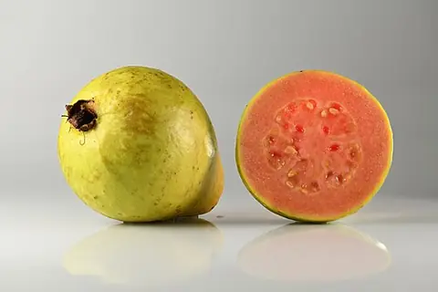

Feral guava
Feral guava is a wild fruit you can forage from August to December in South India, West coast and Deccan, Central forests, East, Northern plains and Northeast. Escaped from gardens into scrub and forest edges. Peeling bark and yellow-green fruit.

When is feral guava in season in India?
Feral guava is usually in season August to December. Timing shifts with weather, latitude and altitude.
Where does feral guava grow in India?
Feral guava grows in Andaman and Nicobar Islands, Andhra Pradesh, Arunachal Pradesh, Assam, Bihar, Chandigarh, Chhattisgarh, Dadra and Nagar Haveli and Daman and Diu, Delhi, Goa, Gujarat, Haryana, Jharkhand, Karnataka, Kerala, Lakshadweep, Madhya Pradesh, Maharashtra, Manipur, Meghalaya, Mizoram, Nagaland, Odisha, Puducherry, Punjab, Sikkim, Tamil Nadu, Telangana, Tripura, Uttar Pradesh, Uttarakhand, West Bengal. Regions: South India, West coast and Deccan, Central forests, East, Northern plains, Northeast.
How do you recognise feral guava?
Escaped from gardens into scrub and forest edges. Peeling bark and yellow-green fruit.
How do you harvest feral guava?
Pick fruit that comes away easily, or gather freshly fallen fruit. Don't break branches, and leave plenty for birds and animals.
How do you eat feral guava?
Fresh with chilli and salt, or as jelly.
How do you store feral guava?
Make jelly or cheese.
What is feral guava good for?
Vitamin C.
What can you cook with feral guava?
- Guava cheese: Guava pulp cooked with sugar and butter until it sets, then cut. A Goan Christmas sweet.